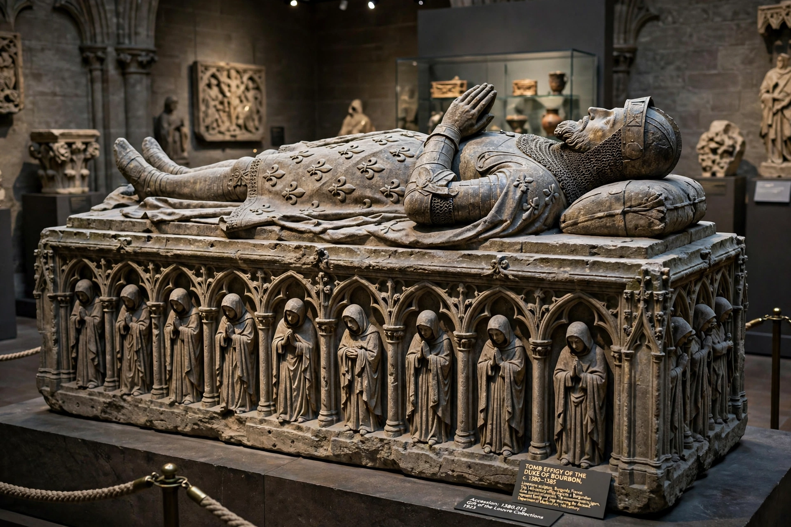

From Wikipedia, the free encyclopedia
| Philip the Bold | |
|---|---|
| Duke of Burgundy | 1363 – 27 April 1404 |
| Born | 17 January 1342, Pontoise, France |
| Died | 27 April 1404, Halle, County of Hainaut |
| Spouse | Margaret III, Countess of Flanders |
| House | Valois-Burgundy |
| Father | John II of France |
| Successor | John the Fearless |
Philip II, known as Philip the Bold (French: Philippe le Hardi; 17 January 1342 – 27 April 1404), was Duke of Burgundy from 1363 to his death and the founder of the Valois-Burgundian line that made Burgundy the richest and most glittering court in late medieval Europe. The youngest son of King John II of France, he earned his epithet at fourteen, fighting beside his father at the Battle of Poitiers (1356), where both were captured by the English.
John II granted Philip the duchy of Burgundy in 1363. His marriage in 1369 to Margaret of Flanders, widow and heiress, brought him on her father's death in 1384 the counties of Flanders, Artois, Rethel, and Nevers, plus the Franche-Comté — uniting the wine lands of Burgundy with the wealthy cloth cities of the Low Countries and laying the territorial foundation of the Burgundian state.
As uncle of the young Charles VI, Philip was a dominant figure in the royal council, effectively co-ruling France during the king's minority and again after Charles's descent into madness in 1392, in rivalry with the king's brother Louis of Orléans. He led French forces to victory over the Flemish rebels at Roosebeke (1382) and was a moving force behind the disastrous Nicopolis crusade of 1396, in which his son John was captured.
Philip's court at Dijon was a byword for magnificence. He founded the Chartreuse de Champmol as his dynasty's mausoleum, employing Claus Sluter and Melchior Broederlam, and his tombs, libraries, tapestries, and festivals set the standard of princely display imitated across Europe. He died in 1404 and was succeeded by his son John the Fearless.
Duchy of Burgundy · Philip the Good · Hundred Years' War
